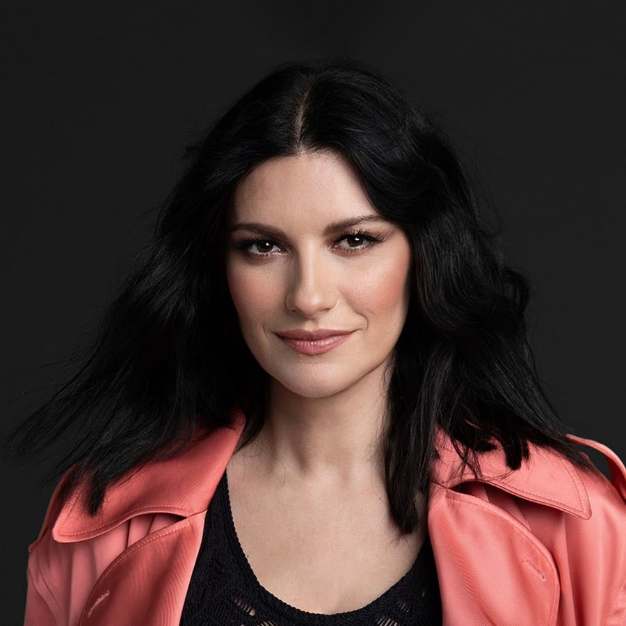

Laura Pausini
Born: 16 May 1974
Age:
Years Active: 1993–present
Genre/s: Pop, Latin pop, pop rock
Label/s: Atlantic, Warner
Laura Pausini (born 16 May 1974) is an Italian singer and songwriter. She rose to fame in 1993, winning the newcomer artists' section of the 43rd Sanremo Music Festival with the song "La solitudine", which became an Italian standard and an international hit. Her self-titled debut album was released in Italy on 23 April 1993 and later became an international success, selling two million copies worldwide. Its follow-up, Laura, was released in 1994 and confirmed her international success, selling three million copies worldwide.
Pausini has released fifteen studio albums, two international greatest hits albums and one compilation album for the Anglophone market only. She mostly performs in Italian and Spanish, but has also recorded and sung songs in Portuguese, English, French, German, Latin, Chinese, Catalan, Neapolitan, Romanian, Romagnol and Sicilian.
In 2004, AllMusic's Jason Birchmeier considered Pausini's sales "an impressive feat for someone who'd never really broken into the lucrative English-language market". In 2014, FIMI certified Pausini's sales of more than 70 million records with a FIMI Icon Award, making her the fourth best-selling female artist in Latin music, and the best-selling non-Spanish speaking female Latin music artist. In 2025, she ranked 9th on Billboard's "Best 50 Female Latin Pop Artists of All Time" list.
Pausini appeared as a coach on both the Mexican and Spanish versions of international reality television singing competition franchise The Voice, was a judge on the first and second series of La banda, and was likewise a judge on the Spanish version of international franchise The X Factor. In 2016, she debuted as a variety show presenter, hosting the television show Laura & Paola, with actress Paola Cortellesi. She was also one of the presenters of the Eurovision Song Contest 2022 and the Sanremo Music Festival 2026.
Throughout her career, she has won numerous music awards in Italy and internationally. In 2006, she won a Grammy Award, receiving the accolade for Best Latin Pop Album for the record Escucha. In 2021, she was nominated for the Academy Award for Best Original Song with "Io sì (Seen)" from the film The Life Ahead. The single also won the Golden Globe Award for Best Original Song, making it the first Italian-language song to win the award. She has been honoured as a Commander Order of Merit of the Italian Republic by President Carlo Azeglio Ciampi and as a World Ambassador of Emilia Romagna.